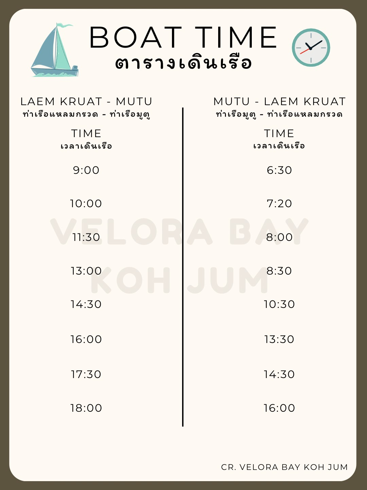

📍 Location
Velora Bay Koh Jum is located on the tranquil island of
Koh Jum (Ko Pu), between Krabi and
Koh Lanta.
🗺️ View on Google Maps
⚠️ Important: Upon arrival at Koh Jum Pier, our staff will greet you with a tuk-tuk and a Velora Bay sign. Please walk slightly outside the pier area to meet our staff. The tuk-tuk transfer is complimentary.
✈️ From Krabi Airport
There are 2 ways to travel from the airport to our resort:
- Private Transportation: We will arrange a private transfer from the airport to Laem Kruat Pier. Then take a private boat to Mutu Pier. Our staff will meet you there with a tuk-tuk to the hotel.
💰 Total: 2,500 THB (max 4 guests) or 3,000 THB (>4 guests)
- Combined Transportation: Private van from the airport to Laem Kruat Pier, then take a public ferry to Mutu Pier. Our staff will meet you there.
💰 Private Van: 1,000 THB (≤4 guests) or 1,500 THB (>4 guests) — paid at the hotel.
💰 Public Ferry: 140 THB/person — paid at the pier.
🛺 Tuk-tuk service is free of charge.

🏖️ From Ao Nang
There are 2 options for you to travel from your hotel in Ao Nang to Koh Jum by minivan.
- Private Transportation: We will arrange a private transfer from your hotel to Laem Kruat Pier. Then take a private boat to Mutu Pier. Our staff will meet you there with a tuk-tuk to the hotel.
💰 Total: 3000 THB (max 4 guests) or 3,500 THB (>4 guests)
- Combined Transportation: Private van from your hotel to Laem Kruat Pier, then take a public ferry to Mutu Pier. Our staff will meet you there.
💰 Private Van: 1,500 THB (≤4 guests) or 2,000 THB (>4 guests) — paid at the hotel.
💰 Public Ferry: 140 THB/person — paid at the pier.
🛺 Tuk-tuk service is free of charge.
Travel from Ao Nang via ferry or speedboat directly to Koh Jum.
- Ferry: From Klong Jilad Pier to Koh Jum Pier — 💰 600 THB/person.
⏰ Departs 11:00 AM → Arrives 12:30 PM (1h10m).
- Speedboat: From Nopparat Thara Pier — 💰 900 THB/person.
⏰ Departures: 10:10–11:20 AM & 1:00–2:10 PM (1h10m).
🍹 From Phuket
There are 2 options for traveling from Phuket to Koh Jum by minivan.
- Private Transportation: We will arrange a private transfer from your specified pickup location to Laem Kruat Pier.
Then take a private boat to Mutu Pier. Our staff will meet you there with a tuk-tuk to the hotel.
💰 Total: 5,000 THB (depending on the distance from your desired pickup location)
- Combined transportation: Private van from your specified pickup location to Laem Kruat Pier, then take a public ferry to Mutu Pier. Our staff will meet you there.
💰 Private Van: 3,500 THB (depending on the distance from your desired pickup location)
💰 Public Ferry: 140 THB/person — paid at the pier.
🛺 Tuk-tuk service is free of charge.
Travel from Phuket via speedboat directly to Koh Jum.
Speedboat: From Rassada Pier via Phi Phi Island — 💰 1,750 THB/person.
⏰ Departs 10:00–11:30 AM (1h30m).
☀️ From Koh Lanta
Travel from Lanta via ferry or speedboat directly to Koh Jum.
- Ferry: From Saladan Pier to Koh Jum Pier — 💰 550 THB/person.
⏰ Departs 8:15 AM → Arrives 9:15 AM (1 hour).
- Speedboat: From Saladan Pier to Koh Jum Pier — 💰 800 THB/person.
⏰ Departures: 9:00–9:30 AM & 1:30–2:00 PM (30 mins).
🏝️ From Phi Phi Island
Speedboat: From Tonsai Pier to Koh Jum — 💰 800 THB/person.
⏰ Departs 11:00–11:30 AM (30 mins).
🍍 From Railay Beach
Speedboat: From Railay East Pier — 💰 900 THB/person.
⏰ Departures: 10:30–11:20 AM & 1:20–2:10 PM (50 mins).
🍍 From Koh Yao Yai
Speedboat: From Klong Hia Pier to Koh Jum — 💰 1200 THB/person.
⏰ Departures: 9:20–11:00 AM & 12:10–2:00 PM (1h50m).
🍍 From Koh Yao Noi
Speedboat: From Manoh Pier to Koh Jum — 💰 1200 THB/person.
⏰ Departures: 9:30–11:00 AM & 12:20–2:00 PM (1h40m).